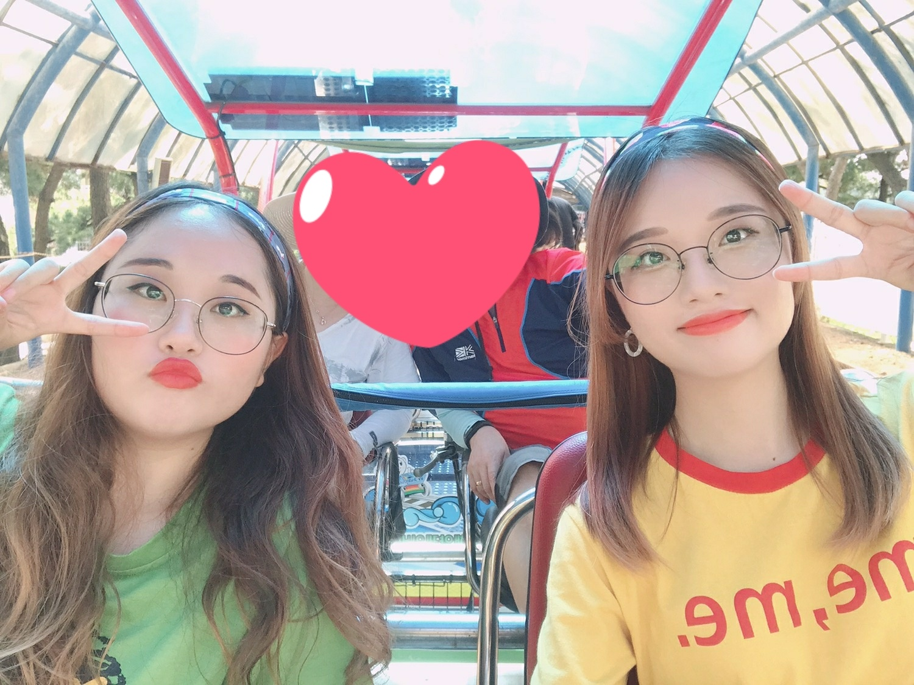
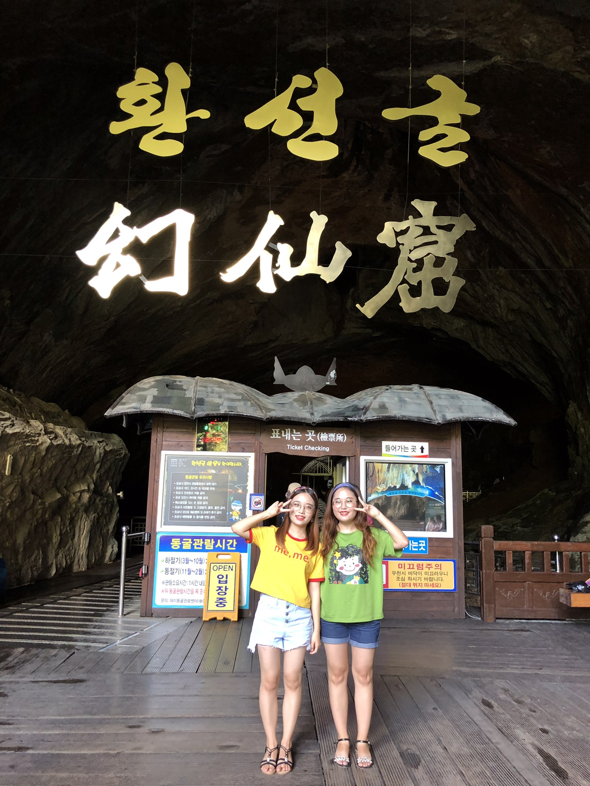
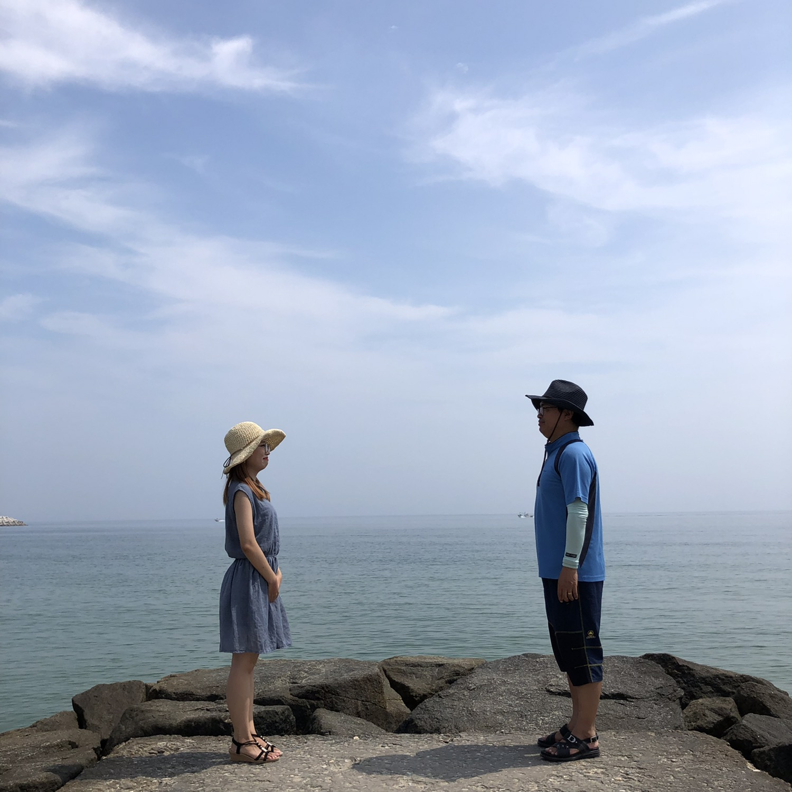

1. 해양레일바이크

일반 레일바이크와 다르게 바다를 보며 타는 해양레일바이크를 탔다.
더운 여름날이었는데 시원한 바다를 보며 레일바이크를 타니까 시원한 기분을 느낄 수 있었다.
바다를 보며 타니 주변 경치가 너무 예뻤고, 중간중간 터널도 있어서 너무 시원했다.
2. 환선굴

구경다니면서 너무 더워 땀이 많이나 지친 상태였는데, 환선굴에 딱 들어가자마자 천국에 온 느낌이었다.
환선굴은 내가 여태 본 굴 중에 제일 큰 굴이었다.
굴안에서 종유석, 석순, 석주 이런것들을 직접 볼 수 있어서 좋은 경험인거 같다.
너무 크고 넓어서 다 도는데 시간도
1시간 넘게 걸리고, 굴이라 안이
미끄러우므로 주의해야 한다!
3. 주문진

강릉 주문진하면! 생각나는 곳은
바로 바로 도깨비 촬영지!!!
너무 유명한 장소라서 사람들이 너무 많아
1시간 이상 기다려서 사진 찍어야했다.
하지만 1시간 이상동안 기다릴 정도로 엄청난 인생샷을 건질 수 있다.
비록 드라마 주인공은 아니지만 드라마 속 장면을 아빠와 함께 재연해봤다.